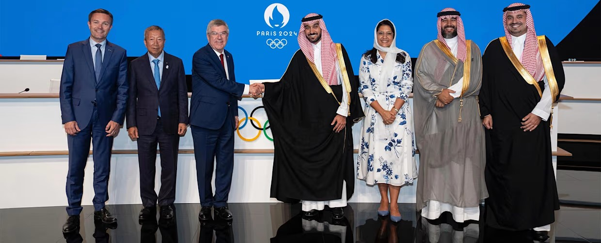

Olympic Esports: The Dawn of a New Era in Competitive Sports

Esports, a burgeoning phenomenon that has redefined competition, entertainment, and global connectivity,
is poised to make history with its inclusion in the Olympics. The International Olympic Committee (IOC) has
officially announced the launch of the Olympic Esports Games, slated to debut in 2025 in Saudi Arabia. This
development symbolizes the convergence of tradition and innovation, spotlighting the role of digital sports on a global stage.
Scroll down to read more.
The Foundation: Olympic Virtual Series (2021)
The IOC first ventured into the realm of esports with the Olympic Virtual Series in 2021. This initiative was designed as a trial run to explore the intersection of sports and gaming. Rather than adopting popular competitive titles like League of Legends or Counter-Strike, the series focused on virtual renditions of traditional sports, including cycling, rowing, baseball, and sailing. The Virtual Series aimed to align with the Olympic ethos by promoting inclusivity and encouraging physical activity. It sought to bridge the gap between traditional sports enthusiasts and gamers, introducing a format where skill, strategy, and sportsmanship were paramount. Although the event garnered moderate success, it faced criticism from parts of the esports community for not fully embracing the competitive gaming titles that dominate the industry. The focus on simulation-based virtual sports felt disconnected from the vibrant ecosystem of esports professionals and fans. Nonetheless, the Olympic Virtual Series marked an essential first step in the IOC’s engagement with gaming.Expansion: Olympic Esports Week (2023)
Building on the learnings from the Virtual Series, the IOC launched the Olympic Esports Week in 2023, held in Singapore. This event represented a more ambitious approach, expanding the scope to include a mix of traditional virtual sports and select competitive games. The week-long event showcased games like Gran Turismo for racing enthusiasts and Zwift for cycling, while also introducing esports staples like Street Fighter and Rocket League. This diversification was a deliberate effort to cater to both traditionalists and the younger, digitally-savvy audience. Singapore’s Olympic Esports Week attracted significant attention and participation, signaling growing interest in esports on the Olympic stage. However, challenges persisted. Many esports fans and professionals felt that the selection of games still leaned too heavily on simulations, failing to embrace the true competitive spirit of esports. Despite these criticisms, the event successfully demonstrated the potential of merging gaming with the Olympic platform. It set the stage for the next evolution: the Olympic Esports Games.The Future: Olympic Esports Games (2025)
The Olympic Esports Games 2025 mark a transformative moment for esports. Unlike its predecessors, this event will feature a dedicated esports competition, highlighting popular and globally-recognized titles. This decision reflects a fundamental shift in the IOC’s approach, signaling its acknowledgment of esports as a legitimate competitive discipline deserving of the Olympic stage.A Broad Spectrum of Games
For the first time, the Olympic Esports Games will move beyond virtual sports to include games from diverse genres. Titles like League of Legends (MOBA), Street Fighter (fighting), and Rocket League (sports/action hybrid) are expected to feature prominently. These games not only represent the competitive spirit but also reflect the creativity, strategy, and teamwork that define esports. The inclusion of mainstream gaming titles is a monumental step toward bridging the gap between the esports and traditional sports communities. It underscores the IOC’s willingness to adapt to changing cultural landscapes while maintaining the Olympics' core values.Saudi Arabia as the Host
The decision to host the inaugural Olympic Esports Games in Saudi Arabia is strategic. The nation has invested heavily in gaming and esports, aiming to establish itself as a global hub for the industry. Recent initiatives, including the development of gaming infrastructure and hosting major esports tournaments, highlight its commitment to this vision. Saudi Arabia’s hosting of the event aligns with its broader goals under the Vision 2030 initiative, which seeks to diversify its economy and enhance its global cultural influence. The nation’s investment in the Olympic Esports Games reflects its ambition to lead the digital sports revolution.Challenges and Expectations
Despite the excitement surrounding the event, challenges remain. One key issue is the selection of games. While titles like League of Legends and Street Fighter are globally popular, the esports ecosystem is incredibly diverse, with numerous games commanding dedicated fanbases. Ensuring an inclusive and representative roster will be critical to the event’s success. Another challenge lies in integrating esports into the broader Olympic framework. Traditional Olympic sports are rooted in physical performance and measurable outcomes, while esports emphasizes mental agility, reflexes, and strategic thinking. Balancing these paradigms while maintaining the Olympics’ core principles of fairness, excellence, and inclusivity will require careful planning. Additionally, the IOC must address concerns about gaming culture, such as issues related to toxicity, inclusivity, and sustainability. Promoting a healthy and positive competitive environment will be essential to building trust and credibility among stakeholders.Transformative Potential
Despite these challenges, the Olympic Esports Games hold transformative potential. By embracing esports, the Olympics can attract a younger, digitally-native audience, ensuring its continued relevance in an increasingly digital world. Moreover, the event provides a platform for esports to gain mainstream recognition, dispelling stereotypes and showcasing the dedication, discipline, and skill of professional players. It also opens the door for meaningful collaborations between traditional sports organizations and the gaming industry, fostering innovation and growth.Conclusion
The inclusion of esports in the Olympics is a landmark moment for both the gaming industry and the Olympic movement. From the experimental Olympic Virtual Series in 2021 to the ambitious Olympic Esports Games in 2025, the journey reflects the growing convergence of tradition and modernity. While challenges remain, the Olympic Esports Games represent a bold step toward embracing the future of competitive sports. By celebrating the diversity, creativity, and global reach of esports, the IOC is not only redefining its legacy but also inspiring a new generation of athletes, gamers, and fans.